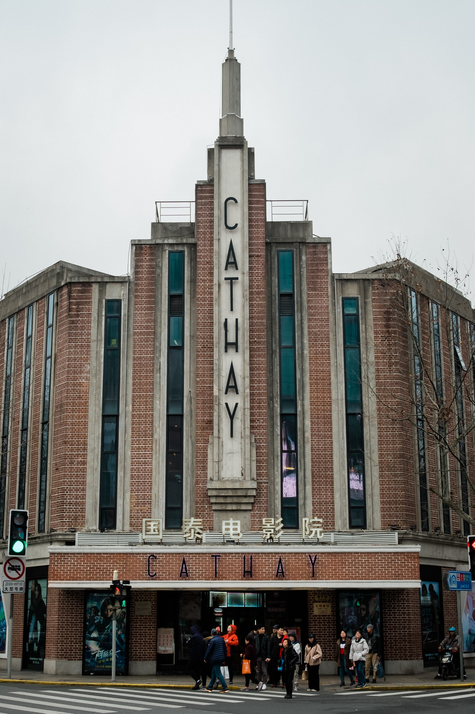
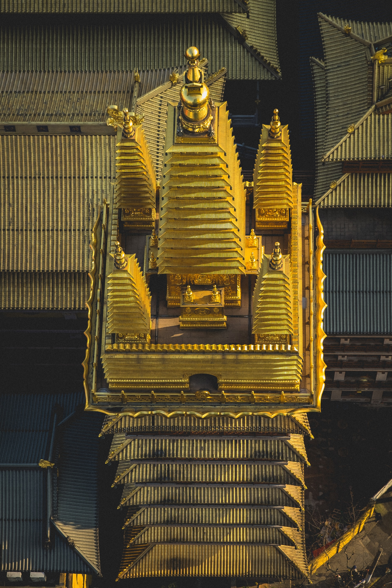
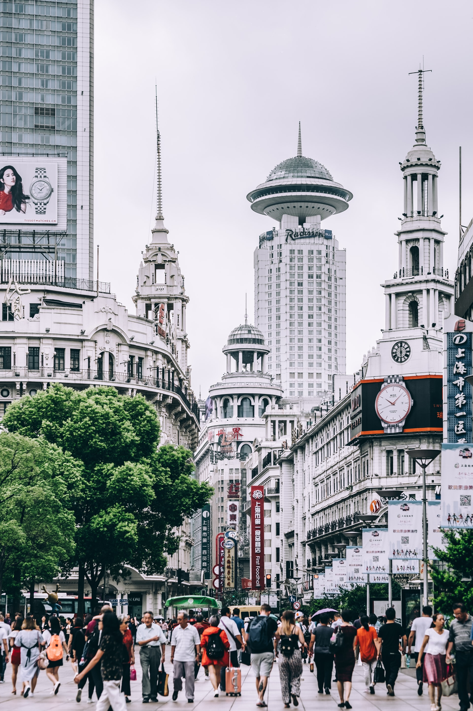
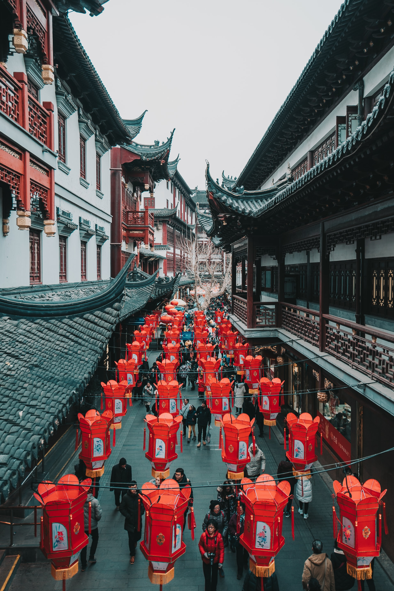
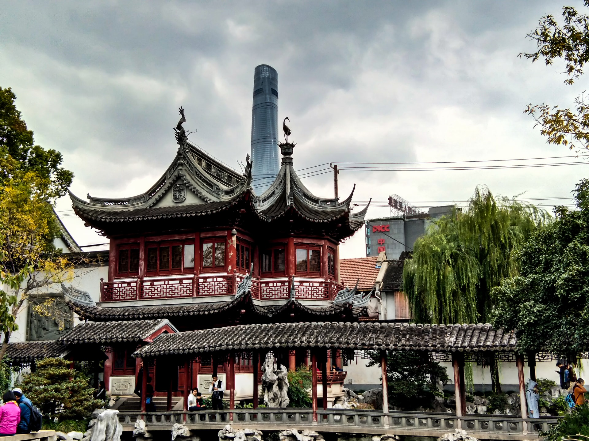
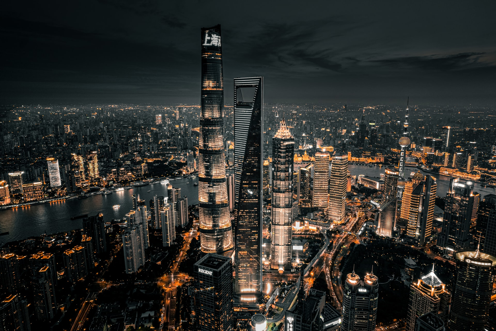
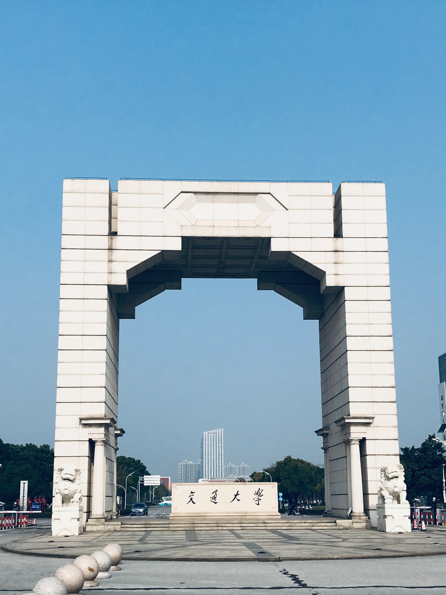
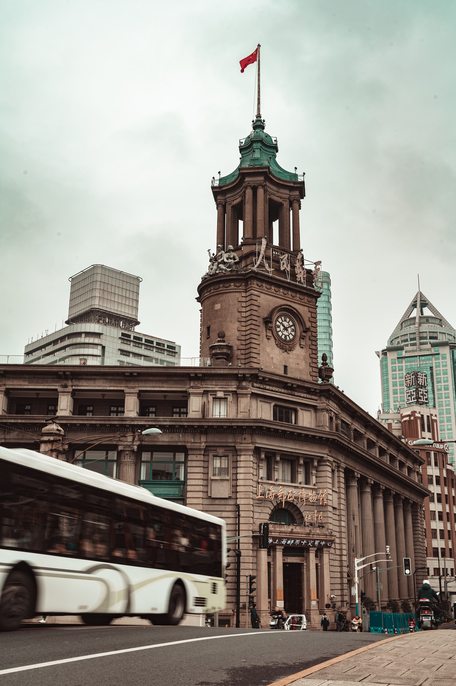
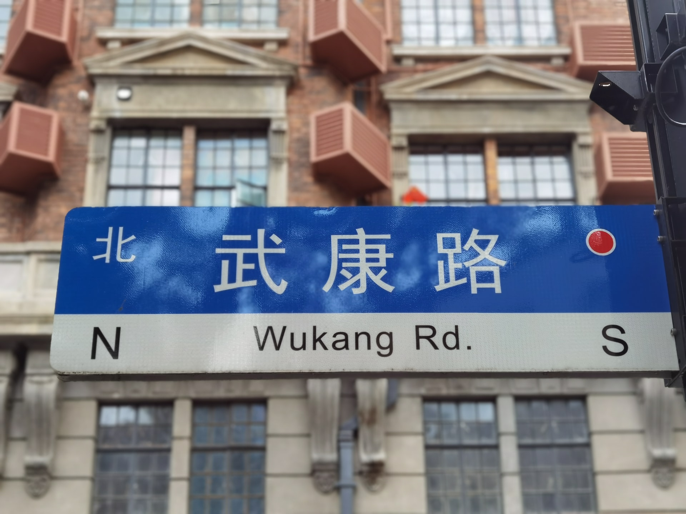
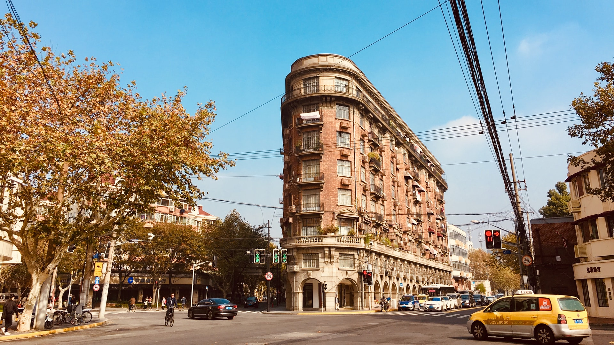

Nanjing Road is one of Shanghai's main shopping streets and stretches almost 3.5 miles long, starting at The Bund and finishing at the junction by Jing'an Temple. The road is one of the worlds busiest shopping streets. You can buy everything from high-end fashion to cheap and tacky souvenirs and everything in between! It is great to visit in the evening to see all the neon signs lit up.
The Bund is Shanghai's most iconic symbol and associated worldwide with Shanghai, London has Big Ben, Sydney the Opera House, Paris the Eiffel Tower, and The Bund is Shanghai's most famous landmark! The area is known for its impressive mile-long waterfront views of Pudong's huge skyscrapers and the Oriental Pearl Building. On one side you have views of tall modern skyscrapers, and on the other side is a reminder of Shanghai's colonial past with lots of historical buildings.
         